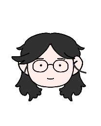

リーダー
各場面での役割
株式会社カシワコリア

次長
釜山日本人会

釜山日本人会会長
家長
家庭の家長
リーダーの金井氏
リーダーの金井氏
金井氏は現在、大きく三つのグループでリーダーとしての役割を立派に果たしている。本稿では、その三つの分野について一つずつ紹介したい。
1. 株式会社カシワコリア
金井氏はカシワテックの韓国支社であるカシワコリアにて次長を務め、現場の最高責任者として部下を指導している。
2. 釜山日本人会
釜山日本人会の会長として、200名を超える会員を代表し、組織を運営している。
3. 金井家の家長
金井氏は四人家族の家長として、家庭を守り、幸せな生活を築いている。
金井氏がこのように三つの分野でリーダーとして活躍できる背景には、子供の頃から積み重ねてきた経験が大きく影響しているという。最初のリーダー経験は小学生の時、野球チームのキャプテンとして活動したときだった。当時は「リーダーが何をすべきか」よく分からなかったが、「チームを必ず勝たせたい」という強い気持ちでキャプテンの役割を立派に果たすことができたと振り返る。
その後も地域でのボランティア活動、大学での部活の部長など、人々の前に立つ機会が自然と多かったそうだ。金井氏は「もちろん性格も大事だが、子供の頃からのさまざまな経験があったからこそ、今はそれぞれの組織に合ったリーダーとして導くことができる」と強調している。
より詳しい内容は以下のインタビューと合わせて紹介していく。
Q＆A
金井さんの左右の名

金井さんが大事に思ってる哲学や左右名は何ですか？
20代の時はもう本当に今を生きるって形だったんですけど。今は誰にでも感謝っていう形ですね。
人が人を動かす。日本人会のためでもあるんですけど、仕事のためでも。私が指示した時にその指示に従って仕事をしてくれる、そういうことに対してはやはり感謝の気持ちっていうのは持っていないといけないので。いつでもありがとうございますっていうような言葉をかけられると、かけられた側としてもやはり嬉しいと思うし、その人についていきたいなとか考えてくれるのかなと思ってですね。
人が人を動かす。日本人会のためでもあるんですけど、仕事のためでも。私が指示した時にその指示に従って仕事をしてくれる、そういうことに対してはやはり感謝の気持ちっていうのは持っていないといけないので。いつでもありがとうございますっていうような言葉をかけられると、かけられた側としてもやはり嬉しいと思うし、その人についていきたいなとか考えてくれるのかなと思ってですね。

初めてリーダーになったのは

人の上に立つということは大きなプレッシャーを伴うと思われます。もともと金井さんはそういうことが得意だったのか、そうではなかったら、プレッシャーをどう克服したのかお聞きしたいです。
私は小学校の頃からずっと野球をしており、小学6年生のとき、少年野球チームの主将（キャプテン）を任されました。それが、人生で初めて「人の上に立つ」という経験だったと思います。当時はまだ子どもですから、リーダーとしての理屈や方法などわかりません。ただ、仲間と一緒に試合に勝ちたい、そのために全員が一丸となって練習できる雰囲気をつくりたい、という思いだけは強くありました。その思いがあったからこそ、声を出して盛り上げたり、チームメイトの調子が悪いときは励ましたりと、自分なりに工夫を重ねることができました。
大学時代も、部活動で部長を務めたり、地域のボランティア活動に参加したりと、自然と人の前に立つ機会が多かったように思います。もともと積極的に動くタイプだったこともあり、「前に出る」ということに抵抗はあまり感じませんでしたが、それでも責任の重さやプレッシャーは常にあります。そのプレッシャーを乗り越えられたのは、周りに助けてもらいながら進める姿勢を持つことだと思います。
大事なのは、チーム全体が同じ方向を向けるように環境を整え、仲間の力を信じて任せることだと思います。
大学時代も、部活動で部長を務めたり、地域のボランティア活動に参加したりと、自然と人の前に立つ機会が多かったように思います。もともと積極的に動くタイプだったこともあり、「前に出る」ということに抵抗はあまり感じませんでしたが、それでも責任の重さやプレッシャーは常にあります。そのプレッシャーを乗り越えられたのは、周りに助けてもらいながら進める姿勢を持つことだと思います。
大事なのは、チーム全体が同じ方向を向けるように環境を整え、仲間の力を信じて任せることだと思います。
部下を引っ張る時、重要なこと

現在、カシワコリア支社内で高い位置にいらっしゃいますが、目下の社員を引っ張る時、重要に思っていることは何でしょうか。
部下や後輩を引っ張るときに、私が重要だと考えていることは、
一つ、信頼関係を築く事人は信頼できる人についてくる。役職が上だからではない。信頼が大きな土台となっていると言えます。
二つ、方向性を明確に示す事何を目指して動けばいいかが見えないと、不安や迷いが生まれる。目標やビジョン。
三つ、自分で見せる事言葉よりも行動が説得力を持つ。自分が率先して動く姿勢を見せて信頼してもらう。
です。
一つ、信頼関係を築く事人は信頼できる人についてくる。役職が上だからではない。信頼が大きな土台となっていると言えます。
二つ、方向性を明確に示す事何を目指して動けばいいかが見えないと、不安や迷いが生まれる。目標やビジョン。
三つ、自分で見せる事言葉よりも行動が説得力を持つ。自分が率先して動く姿勢を見せて信頼してもらう。
です。
日本人会の会長として
現在、金井さんは二百名を超える団体の会長として,団体を運営する中、リーダーとして心掛けていることは何でしょうか？
私が心掛けている事、取り組んでいる事は、上記回答ともかぶりますが、まず自分が模範を示す。その事で方向性を明確に示す事です。新しいイベントの企画やホームページ改修について、自ら企画案をつくり提案するなどして「信じて任せる人」になることです。そしてその後は私も信じて任せる事がまた大切だと思います。
リーダー的性格について
金井さんは「進んで自分で何かをやる」、「嫌だと思うことは自分でやってあげる」性格だとおっしゃいました。これはリーダーとしての重要な要素だと思いますが、金井さんの考えを伺いたいです。
確かに、私は昔から「進んで自分で動く」ことを大切にしてきました。ひとつは、そういう姿勢を示すことで、周りが安心して動けるからです。
チームの中には、「失敗したらどうしよう」「自分がやるべきではないのでは」と躊躇する人もいます。そんなとき、まず自分がやってみせることで、「やればできるんだ」と感じてもらえると思っています。大変な仕事も自分から引き受ける、または一緒に行動する姿勢を見せることで、「この人についていこう」と思っていただけたらと考えています。まず行動で示す。これこそ、リーダーとして信頼を得る一番の近道だと考えています。
私自身、温厚な性格だと思っています。誰とでも仲良くできそうと良く言われます。これはコミュニケーションの一環でもあると思います。
私自身、温厚な性格だと思っています。誰とでも仲良くできそうと良く言われます。これはコミュニケーションの一環でもあると思います。